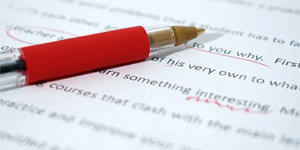

Assignment Brief Analysis
Before starting, we identify what your UK assignment is actually asking you to do. This means looking at command words, requirements, marking criteria, learning outcomes and any specific instructions.
Professional assignment, essay, coursework, dissertation and research support for students studying at UK universities. Every university assignment starts with a brief. The real challenge for students in UK higher education is understanding exactly what that brief is asking for, finding the right academic direction, building a sensible structure and turning research into clear, well-developed work.
That is where our specialized UK assignment service comes in. We provide tailored academics aligned with UK university standards, customized according to your specific subject, deadline, academic level, assignment requirements, word count and UK referencing style (Harvard, OSCOLA, APA, etc.). .
From individual assignments to larger research projects, our services are designed to cover the different types of academic work UK students deal with throughout their university journey.
.webp)

Our academic speciality in the UK covers a range of subject areas, helping students find programmes that match their academic background, interests and future career goals.
Before starting, we identify what your UK assignment is actually asking you to do. This means looking at command words, requirements, marking criteria, learning outcomes and any specific instructions.
We focus on more than describing information. Where the UK assignment requires critical analysis, the work should engage with evidence, compare perspectives, evaluate ideas and develop a reasoned position.
We help identify relevant research material and organise it around the purpose of your UK university assignment. Your sources should support the argument rather than simply appear in the reference list.
UK university assignments can have specific expectations around structure, academic language, evidence, referencing and presentation. Our support is designed with these UK academic expectations in mind.
Research projects require a different level of planning. We can support research questions, literature development, methodology, data presentation, discussion and overall research structure.
If you already have the content but feel your UK assignment is unclear, repetitive or poorly structured, editing can help bring the document together.
Get reliable assignment support across a wide range of popular UK university subjects, with guidance tailored to your course requirements, academic level, and assignment brief. We provide academic support across a broad range of disciplines.

Business Management, Strategic Management, Operations Management, HRM, Leadership, Entrepreneurship, Marketing, International Business and related subjects.

Financial Accounting, Management Accounting, Corporate Finance, Financial Management, Investment, Auditing, Taxation and related areas.

Contract Law, Criminal Law, Commercial Law, Company Law, Employment Law, Tort Law, Public Law and other legal subjects.

Nursing, Public Health, Healthcare Management, Mental Health, Adult Nursing, Child Nursing, Midwifery and related healthcare disciplines.

Psychology, Sociology, Social Work, Criminology, Education, Counselling and behavioural studies.

Computer Science, Software Engineering, Information Technology, Data Science, Artificial Intelligence, Cyber Security, Programming and Information Systems.

Mechanical Engineering, Civil Engineering, Electrical Engineering, Electronic Engineering, Environmental Engineering and related disciplines.

English Literature, History, Philosophy, Media, Communication, Politics, International Relations and other humanities subjects.
Whether you are studying at undergraduate, postgraduate or doctoral level, get academic support tailored to your subject, course requirements and study goals.
Support for essays, assignments, coursework, reports, case studies, presentations and research projects.
More advanced support for critical analysis, specialist subjects, literature reviews, methodology and dissertation-level research.
Research-focused assistance with literature development, methodology, academic editing, research structure and presenting complex academic work clearly.
Additional support with academic structure, British university conventions, referencing and clear academic writing for students studying in the UK.
Getting academic support should not be complicated. Our process is designed to keep everything clear from the first conversation to the final review.
Send us your UK assignment brief, topic, word count, deadline, academic level and any additional instructions. You can also send supporting files where necessary.
We look at your UK University requirements and identify the scope of the work. This helps us understand the subject, complexity, academic expectations and turnaround required.
Once the requirements are clear, we explain what support is available for your particular task. No vague promises. No pretending that a complex research project can be handled properly without understanding the scope first.
The UK academic work is developed around your brief, subject, structure, research direction and referencing requirements.
Before completion, the work can be reviewed for structure, clarity, consistency, academic presentation and referencing. For longer research projects, review and redrafting are especially important parts of the writing process.
Once the work has gone through the agreed process, you receive the completed academic support according to your requirements.
Sometimes you have a week. Sometimes you have two days. Sometimes you realise that tonight's deadline is much closer than you thought. No matter how short your timeframe is, our 24/7 UK assignment help service is here to support you. If you are facing an urgent university deadline, send us your details right away.
We will look at:
Then we can tell you what is realistically possible.
You do not need to write a long explanation. Send whatever information you already have.
This may include:
With 6+ years of experience in academic support, Research Hub UK provides structured, subject-focused assistance for students studying across UK universities and colleges. From individual assignments to dissertations and research projects, our support is built around your academic level, assignment brief, deadline and specific university requirements.
For more than six years, we have worked with different types of university assignments and research-based academic work, giving us a practical understanding of UK higher-education requirements.
Our support covers a wide range of academic needs, including assignment help, essay writing, coursework, dissertation writing, Master's and MBA dissertations, dissertation proposals, PhD thesis support, literature reviews, research proposals, research papers, case studies, proofreading, BTEC and HNC assignments, ATHE assignments, resit assignments and more.
We cover subjects including Business Management, Accounting, Finance, Marketing, HRM, Law, Nursing, Health and Social Care, Psychology, Computer Science, Cyber Security, Data Science, Engineering, Construction Management, Education, Criminology, Pharmacy, Architecture, Research Methods and many others.
Our academic support is designed around the requirements of students studying across a broad range of UK universities and colleges. We work from your own assignment brief, marking criteria and module guidance rather than relying on a generic university template.
We can work with requirements associated with qualifications and awarding organisations such as Pearson BTEC, ATHE, OTHM, Qualifi, NCC Education, ABE and CMI, depending on the specific unit brief and assessment criteria.
Whether you are working on an undergraduate essay, HNC/HND or BTEC assignment, Master's dissertation, MBA project or advanced research work, the support is adapted to the level and complexity of your task.
We pay attention to academic structure, critical analysis, research evidence and commonly used referencing styles including Harvard, APA, MLA, Chicago and OSCOLA, while following your university or course-specific instructions where provided.
From understanding the task and organising the research to reviewing structure, presentation and referencing, our process is designed to keep academic support clear and straightforward from the beginning.
Find quick answers about Research Hub UK, including our academic writing services, subject coverage, UK university and college support, research assistance, referencing, deadlines and how our process works.
Research Hub UK provides support with assignments, essays, coursework, dissertations, research proposals, literature reviews, case studies, proofreading, BTEC and HNC assignments, ATHE assignments, resit work and other academic tasks.
We support a wide range of subjects, including Business, Accounting, Finance, Law, Nursing, Health and Social Care, Psychology, Computer Science, Cyber Security, Engineering, Education, Pharmacy, Architecture and many more.
Yes. Research Hub UK supports students studying across a broad range of UK universities and colleges. We work from your own assignment brief, marking criteria and module requirements.
Yes. We can support different stages of dissertation and research work, including research proposals, literature reviews, methodology, research papers, structure, editing and referencing.
Simply send us your assignment brief along with your subject, academic level, word count, deadline and any specific university requirements. We will review the task and explain the most suitable support available.
Assignment brief · Subject · Academic level · Word count · Deadline · Referencing style
Email: clients.researchhubuk@gmail.com
WhatsApp:
+8801313633953